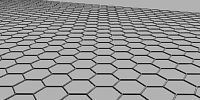
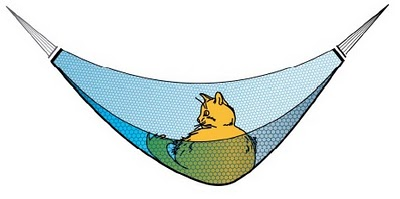

Les polycycles carbonés
(graphène, nanotubes, fullerène, diamants)
Nous abordons ici sous un autre angle un
type de métamatériaux en partie décrits dans l'article
"Les polycycles" du glossaire qu'il est utile de lire en premier lieu.
Dans l'ensemble, ces matériaux ont été présentés et le sont toujours, par la
presse, comme faisant partie des prochaines évolutions les plus prometteuses des
nanosciences. Une attention particulière a été portée par un grand nombre de
journalistes, de réalisateurs et d'auteurs à l'énumération de
possibilités époustouflantes et révolutionnaires, sans doute par besoin d'un
effet d'annonce ou simplement d'un engouement public. Malheureusement, après une première enquête il nous semble
déjà évident qu'il faut aborder ce sujet avec circonspection si l'on veut rester
dans des limites admissibles de crédibilité.
Mieux vaut prévenir que guérir, alors prévenons : en réalité, comme pour les initiations alchimiques
(la pierre philosophale et les panacées notamment), le chemin parcouru pour
étudier et comprendre la réalité physique vaudra sans doute davantage
rétrospectivement que les
résultats obtenus directement, qui risquent de nous paraître assez décevants
comme nous allons le voir.
|

Graphène |
|
|

Nanotube de carbone |
|
|
Fullerène |
Matériaux hautement conducteurs - au point que le vrai problème est
parfois de les rendre moins conducteurs -, très légers et cent ou deux cents
fois plus résistants que l'acier, ils ont évidemment fait rêver. Mais le temps
passe et les problèmes demeurent, notamment en ce qui concerne les tailles
encore lilliputiennes des composants produits et leurs coûts de fabrication,
tandis que de nouveaux écueils apparaissent, concernant par exemple leur
homogénéité ou celle des cultures d'éléments semi-conducteurs (on réfère ici au
graphane). On rappellera
ainsi, par exemple, afin de tempérer les ardeurs, que le prix d'un m2
de graphène était évalué à 600 milliards d'euros en 2010 (source EcranFlexible.com).
Les nanotubes de carbone sont annoncés un peu partout comme seuls matériaux permettrant de
réaliser des prouesses architecturales tels que la Méga-cité Shimizu (lien
vers recherche Google) ou d'autres projets grandioses comme l'ascenseur
spatial (autre
lien). Et par chance, les
nanotubes multifeuillets sont à la fois les plus solides et les moins coûteux
(le gramme se compte en dizaines d'euros, en centaines ou en milliers pour les monofeuillets
en 2013).
La Shimizu Pyramid (lien
vers le site de la Shimizu Corporation)
fait partie de prospectives dites "arcologiques" (lien
recherche Google)
développées dès les
années 1980.
Cependant, il existe des
contraintes lors de leur assemblage. Les tubes sont souvent intégrés, "noyés"
dans une fibre (à hauteur de 60% pour les plus denses, jusqu'à quelques pourcent
dans le cas où l'on ne recherche pas un renforcement optimal, voire aucun
renforcement) et leur disposition doit alors respecter le sens de la fibre.
Sachant que chacun mesure de un à quelques dizaines de nanomètres de diamètre pour quelques centaines
ou milliers de long, sachant également qu'un tel matériau, d'une dureté
phénoménale, pourra difficilement être usiné, on comprend intuitivement qu'il ne s'agit pas de
n'importe quel "tissage".
Les nanotubes multifeuillets ont été créés en 1991 (par Sumio Iijima, qui
produisit également des monofeuillets deux ans plus tard) et pour autant
il n'existe toujours pas de procédé simple et bon marché trouvant un véritable
débouché en architecture et autres disciplines plastiques. Ils
ont un prix et impliquent des contraintes n'autorisant pas un emploi massif dans
ce domaine.
Comme champs d'applications pratiques, on citera la microscopie
électronique ou la fabrication de raquettes de tennis un peu plus légères et
solides que les modèles courants. Concernant le fullerène, la principale
application actuellement envisagée concerne la mise au point de lubrifiants.
Le graphène, d'invention plus récente (2004, Andre Geim et Konstantin
Novoselov, récompensés par le Nobel de physique 2010) a des propriétés
plastiques intéressantes. Sa ténacité (c'est le terme consacré) est supérieure d'un
facteur trois au moins à celle jusque là record du fil d'araignée. Un chat peut
théoriquement faire sa sieste sur un hamac en graphène, presque invisible et
plus que princier.

Kungl. Vetenskaps Akademien ©
Mais ce n'est pas ce qui déchaîne les passions. Avec le
graphène, il est possible de réaliser un écran tactile d'épaisseur atomique,
applicable sur différentes surfaces. Cela coûte horriblement cher mais nous
savons le faire depuis quelques années. Le marché est important mais hors de
portée malgré les différents procédés de fabrication développés.
L'utilisation comme matériau de stockage d'informations est tout autant freinée
par cet obstacle mais aussi par des difficultés techniques de taille. On peut
cependant associer graphène et nanotubes semi-conducteurs (ou autres composants)
pour les contourner.

Les diamants synthétiques au bore (voir
Le bleu de France) posent
le même type de problèmes d'assemblage nanométrique. Dans l'ensemble de ces
disciplines, une certaine attention est
portée sur les assemblages naturels, notamment dans des contextes intersidéraux
ou géologiques car ces substances ne sont pas l'apanage de la main humaine. Dans
des astéroïdes, dans des nébuleuses organiques, dans la croûte terrestre, de
telles choses sont créées.
De même mais dans un matériau bien plus courant sur notre
planète, le graphite, on ne trouve rien d'autre que des feuilles de graphène
superposées. Si les technologies à base de polycycles carbonés devaient trouver
un essor notable, ce serait sans doute grâce à l'observation et la reproduction
de phénomènes naturels. Et même si un tel essor n'advenait jamais, nous aurions
au moins appris quelque chose de la nature. Du moins, espérons-le car observer
et comprendre ne sont pas non plus choses faciles ni même, bien souvent, choses
faisables.
Par ailleurs il existe quelques modestes applications
artistiques et/ou architecturales qui pour ne pas être à la hauteur des rêves
suscités par de nombreux organes de presse, ne doivent pas être traitées par le
mépris. Ainsi un sculpteur, un plasticien, un architecte, doit selon nous
s'intéresser aux nanotubes de carbones pour leurs propriétés solidifiantes (en
gardant à l'esprit l'épineuse question du coût mais aussi celle, toujours pas
clairement résolue, de la nocivité). Un infographiste peut prêter attention aux
possibilités du graphène et ne perdra rien à se tenir informé.
Retour
début de page


{kind=link}
{kind=link}